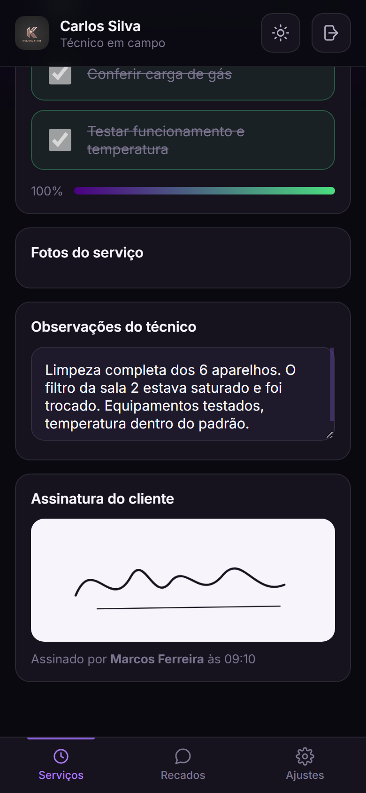

Empresas que mandam técnico para a rua perdem o rastro do serviço: a foto fica no celular de um, o papel no carro de outro. Eu construí o sistema que resolve isso, sozinha, do banco de dados ao deploy.
Checklist, foto e assinatura do cliente na tela do aparelho. No escritório, a equipe aparece no mapa em tempo real e a ordem de serviço sai pronta. Multiempresa, com cada cliente vendo só o que é dele.
E funciona sem internet. O app abre offline e o que foi registrado sobe sozinho quando o sinal volta.

Portfólio costuma listar tecnologia. Eu prefiro mostrar escolha, motivo e prova.
O técnico trabalha em subsolo e zona rural. Fiz o app guardar a própria tela no aparelho, com fila para o que ele registra sem sinal.
Na hora de testar eu não simulei: desliguei o servidor e recarreguei. Abriu, listou os serviços do dia e aceitou foto.
Subi de 50 a 400 aparelhos sincronizando juntos. A vazão ficou estável e sem nenhum erro.
O limite real apareceu no navegador do técnico: 4,9 MB por aparelho, quase todo ocupado por foto. Tirei as fotos do registro e o consumo caiu para 187 KB.
A tag de imagem do navegador não manda cabeçalho de autenticação, e token na URL vaza em histórico.
Resolvi com um cookie aceito só na rota da imagem. Testei um por um: sem login 401, gestor da empresa 200, gestor de outra empresa 404.
A tela "em campo agora" era montada a partir das equipes cadastradas. Técnico sem equipe nunca aparecia.
Ou seja: a empresa de dois funcionários via zero para sempre. Justamente o cliente que eu vendo.
Foi vendendo que eu vi o problema de perto. Em vez de só reclamar dele, resolvi construir a solução.
Aprendi a ouvir cliente, bater meta e perceber quando alguém está prestes a desistir.
Foi aqui que eu vi a dor todos os dias: o serviço acontece longe do escritório e a informação se perde no caminho.
Comecei a estudar para conseguir construir aquilo que eu estava vendendo.
Produto no ar, com empresa de verdade usando. Do banco de dados ao deploy, feito por mim.
Se você tem equipe na rua, ou está procurando alguém que entrega do começo ao fim, me chama.